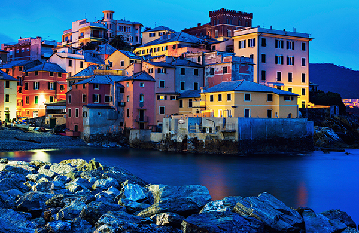

Italy: A land of art and history

Italy, officially the Italian Republic is a European country consisting of a peninsula delimited by the Alps and surrounded by several islands. Italy is located in south-central Europe, and it is also considered a part of western Europe. A unitary parliamentary republic with its capital in Rome, the country covers a total area of 301,340 km2 (116,350 sq mi) and shares land borders with France, Switzerland, Austria, Slovenia, and the enclaved microstates of Vatican City and San Marino. Italy has a territorial exclave in Switzerland (Campione) and a maritime exclave in the Tunisian Sea (Lampedusa). With around 60 million inhabitants, Italy is the third-most populous member state of the European Union.
Due to its central geographic location in Southern Europe and the Mediterranean, Italy has historically been home to myriad peoples and cultures. In addition to the various ancient peoples dispersed throughout what is now modern-day Italy, the most predominant being the Indo-European Italic peoples who gave the peninsula its name, beginning from the classical era, Phoenicians and Carthaginians founded colonies mostly in insular Italy, Greeks established settlements in the so-called Magna Graecia of Southern Italy, while Etruscans and Celts inhabited central and northern Italy respectively. An Italic tribe known as the Latins formed the Roman Kingdom in the 8th century BC, which eventually became a republic with a government of the Senate and the People. The Roman Republic initially conquered and assimilated its neighbours on the Italian peninsula, eventually expanding and conquering parts of Europe, North Africa and Asia. By the first century BC, the Roman Empire emerged as the dominant power in the Mediterranean Basin and became a leading cultural, political and religious centre, inaugurating the Pax Romana, a period of more than 200 years during which Italy's law, technology, economy, art, and literature developed. Italy remained the homeland of the Romans and the metropole of the empire, whose legacy can also be observed in the global distribution of culture, governments, Christianity and the Latin script.
During the Early Middle Ages, Italy endured sociopolitical collapse and barbarian invasions, but by the 11th century, numerous rival city-states and maritime republics, mainly in the northern and central regions of Italy, rose to great prosperity through trade, commerce and banking, laying the groundwork for modern capitalism. These mostly independent statelets served as Europe's main trading hubs with Asia and the Near East, often enjoying a greater degree of democracy than the larger feudal monarchies that were consolidating throughout Europe; however, part of central Italy was under the control of the theocratic Papal States, while Southern Italy remained largely feudal until the 19th century, partially as a result of a succession of Byzantine, Arab, Norman, Angevin, Aragonese and other foreign conquests of the region. The Renaissance began in Italy and spread to the rest of Europe, bringing a renewed interest in humanism, science, exploration and art. Italian culture flourished, producing famous scholars, artists and polymaths. During the Middle Ages, Italian explorers discovered new routes to the Far East and the New World, helping to usher in the European Age of Discovery. Nevertheless, Italy's commercial and political power significantly waned with the opening of trade routes that bypassed the Mediterranean. Centuries of rivalry and infighting between the Italian city-states, such as the Italian Wars of the 15th and 16th centuries, left Italy fragmented and several Italian states were conquered and further divided by multiple European powers over the centuries.
By the mid-19th century, rising Italian nationalism and calls for independence from foreign control led to a period of revolutionary political upheaval. After centuries of foreign domination and political division, Italy was almost entirely unified in 1861, establishing the Kingdom of Italy as a great power. From the late 19th century to the early 20th century, Italy rapidly industrialised, namely in the north, and acquired a colonial empire, while the south remained largely impoverished and excluded from industrialisation, fuelling a large and influential diaspora. Despite being one of the main victors in World War I, Italy entered a period of economic crisis and social turmoil, leading to the rise of a fascist dictatorship in 1922. Participation in World War II on the Axis side ended in military defeat, economic destruction and the Italian Civil War. Following the liberation of Italy and the rise of the resistance, the country abolished the monarchy, established a democratic Republic and enjoyed a prolonged economic boom, becoming a highly developed country.
Today, Italy is considered to be one of the world's most culturally and economically advanced countries, with the world's eighth-largest economy by nominal GDP (third in the Eurozone), sixth-largest national wealth and third-largest central bank gold reserve. It ranks very highly in life expectancy, quality of life, healthcare, and education. The country plays a prominent role in regional and global economic, military, cultural and diplomatic affairs; it is both a regional power and a great power, and is ranked the world's eighth most-powerful military. Italy is a founding and leading member of the European Union and a member of numerous international institutions, including the UN, NATO, the OECD, the OSCE, the WTO, the G7, the G20, the Union for the Mediterranean, the Council of Europe, Uniting for Consensus, the Schengen Area and many more. The country has long been a global centre of art, music, literature, philosophy, science and technology, and fashion, and has greatly influenced and contributed to diverse fields including cinema, cuisine, sports, jurisprudence, banking and business. As a reflection of its cultural wealth, Italy is home to the world's largest number of World Heritage Sites (55), and is the fifth-most visited country.